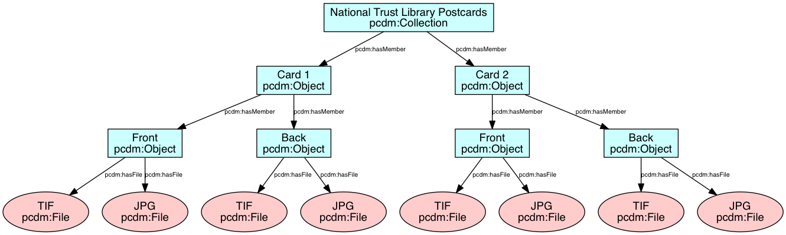
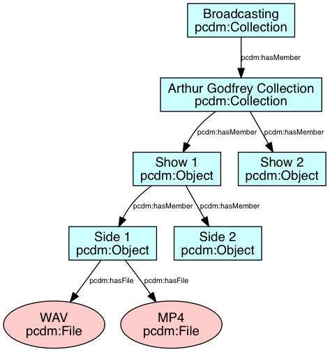
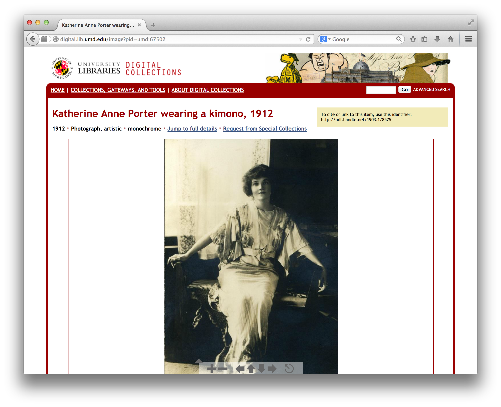
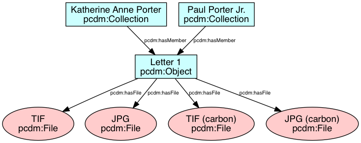
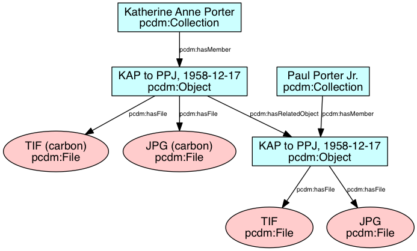

Repository Platforms
at the University of Maryland Libraries
Joshua Westgard
March 23, 2016
Overview
| Platform: |
Archive-It |
Omeka |
Dspace |
Fedora |
Islandora |
Hydra |
ArchivesSpace |
| language: |
N/A |
PHP |
Java |
Java |
PHP/Drupal |
Ruby on Rails |
Ruby on Rails |
| Developers needed: |
no |
no, unless... |
yes |
yes |
yes |
yes |
probably |
| Hosting available: |
yes |
yes |
yes |
yes, with Islandora |
yes |
not yet |
yes |
- Developed and maintained by CHNM at GMU
- Wordpress for GLAM
- Plugins and themes for push-button customization
- In practice many users want more control, requiring PHP skills
- Hosted solution available (omeka.net)
- Omeka S will offer easier multisite hosting
- http://transcribe.lib.umd.edu
Dspace
- More "turn-key" than Fedora
- Java application, requiring developer time for customization
- Hosted option (Dspace Direct), and good service provider ecosystem
- Widely adopted, also internationally
- Focussed on IR use case
- Good Google Scholar crawl integration
- Can be used for image and A/V collections too
- digital.lib.umd.edu
Fedora
Flexible and Extensible Digital Object Repository Architecture
Current System
- Fedora 2-based system, nearly 10 years old
- Homegrown Java-based admin tools
- Hippo CMS-based front end
- Audio-Video, Photographic, Manuscript, EAD
- Separate DSpace for IR
- digital.lib.umd.edu
Fedora 4
- Goal: 1st class repository services for various applications
- Community sourced admin tools: Hydra
- Migration of existing collections to the new system
- Leverage the promise of the Linked Data Platform
- https://www.w3.org/TR/ldp/
- RDF-based metadata
- RDF-based content modeling: Portland Common Data Model
Content Modeling: PCDM

Content Modeling: PCDM

Content Modeling: PCDM

Content Modeling: PCDM

Content Modeling: PCDM

Takeaways
- Repositories have great potential
- Resources will always be a challenge
- Financial and human resources
- Community source projects provide some support
Thank you!
Joshua Westgard (westgard@umd.edu)
/